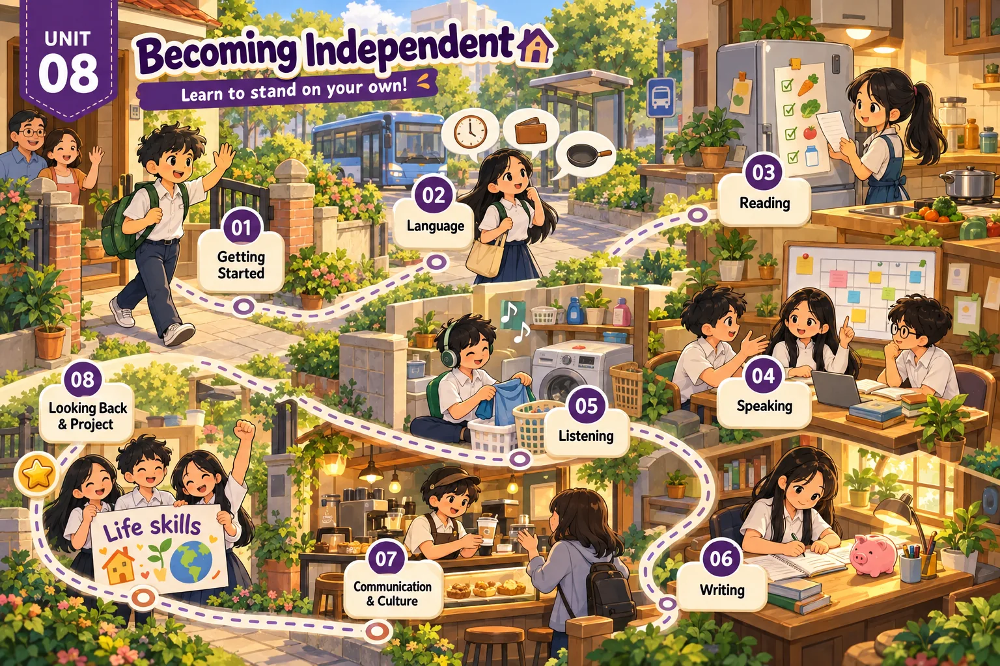

Lesson 1 · Getting started — Earning your parents' trust Lesson 2 · Language Lesson 3 · Reading: How teens can become independent Lesson 4 · Speaking: Instructions on learning basic life skills Lesson 5 · Listening: Becoming independent learners Lesson 6 · Writing: The pros and cons of self-study Lesson 7 · Communication and Culture: Teen independence in the US Lesson 8 · Looking back and Project: A plan to develop a life skillĐã dựng: Lesson 1, 2, 3, 4, 5, 6, 7, 8. Đủ cả 8 tiết. Dựng xong tiết nào thì mở khoá thẻ đó.